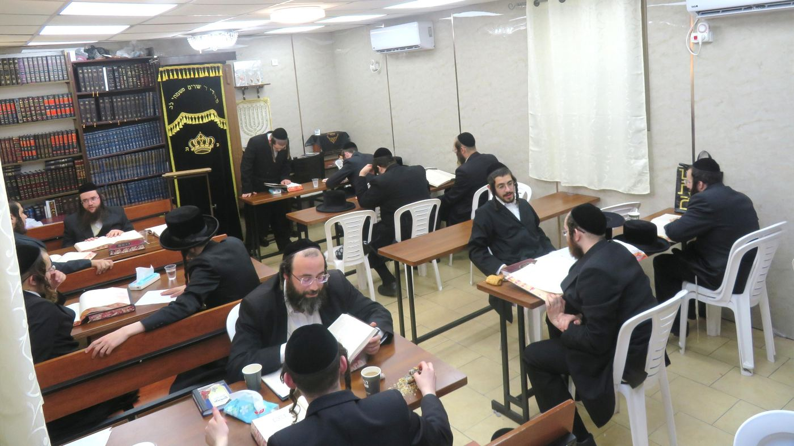
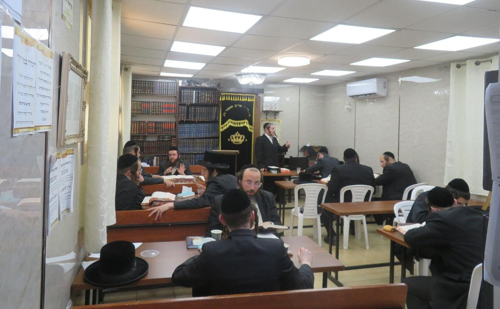
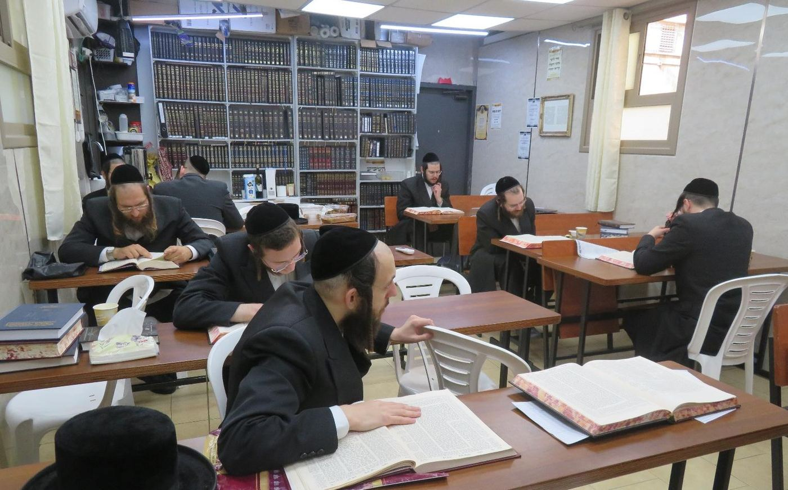
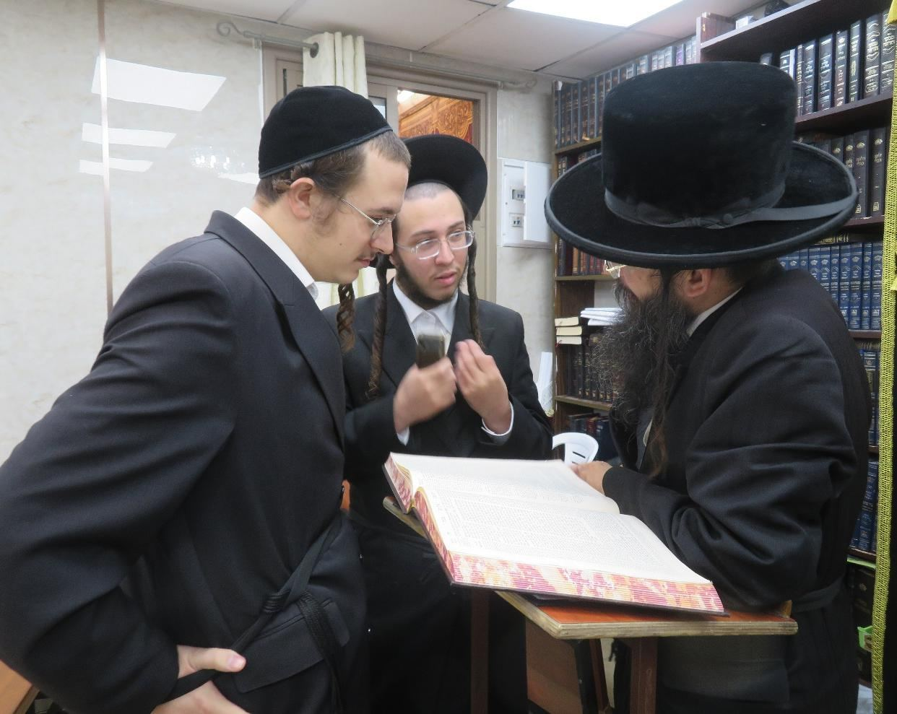

מפעלות הכוללים
כוללי אברכים — יום ובוקר
"מה אהבתי תורתך כל היום היא שיחתי"
עשרות אברכים חשובים שוקדים על תלמודם מדי יום ביומו במסגרת הכוללים של המרכז. לצד הכולל המרכזי פועל כולל בוקר, כך שבית המדרש הומה מלימוד לאורך שעות היום. האברכים מקבלים מלגה חודשית שמאפשרת להם להתמסר ללימוד בלב שקט.
- סדרי לימוד קבועים ורציפים
- לימוד בחברותות ובעיון
- מלגות חודשיות לאברכים